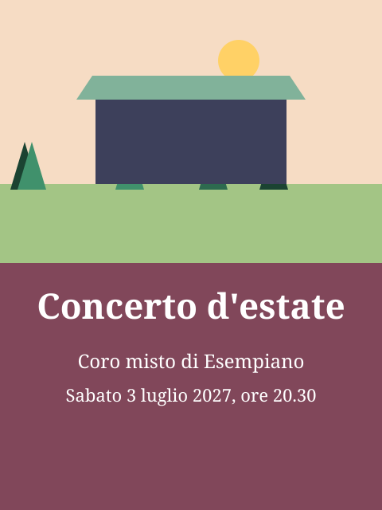

Invito
Il coro misto vi invita al tradizionale concerto d'estate. Entrata libera, colletta all'uscita.

Orari dello sportello
Da lunedì a venerdì, 8.30–11.30 e 14.00–17.00; il giovedì orario continuato fino alle 18.30. Alla vigilia dei giorni festivi chiudiamo alle 16.00.